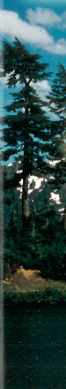
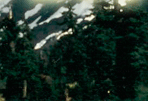
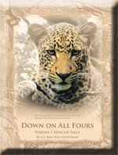
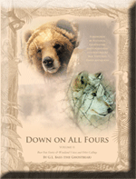
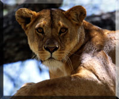
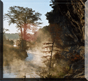
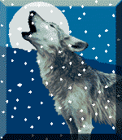
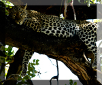

A1Q
 |
 |
 |
||||
|  |
 |
|||||
| |
||||||
 |
||||||
| |
 |
 |
||||
 |
||||||
 |
||||||
| |
||||||
 |
 |
|||||
| |
|
|
|
|
|
|
PhotoPoems
is a new artistic expression, intergrating poetry and photographic art.
The expression combines naturalist photos and metaphorical poems related to themes
of life and the environment....continued below....please scroll down to view thumbnails.....
| Down on all Fours Available now at Barnes and Noble ! |
||
 |
 |
|
| Down on All Fours Volume I | Down on All Fours Volume II | |
For more info on Greg's new books, please click the thumbnail "Down on all Fours" below...
| Down on all Fours | 7 days With Omari- An Adventure across the Serengeti | ||
 |
|||
| by g.l.bass (the ghostbear) | by g.l.bass (the ghostbear) | ||
| Available in stores and on-line June 2011. | Greg's next book- coming late 2011 | ||
 |
 |
||
| Texas River Times | Spirit of The Mountain | ||
| Botswana Blowups | Botswana |
Look for Greg's (the ghostbear) new book Down on All Fours from Trafford publishing.
Available in stores and on-line July 2011.
The preservation of this primordial region is more of a step toward true progress than the idea of pavement
through the Seregenti plains- Greg L. Bass-the ghostbear.Please feel free to contact me at poetlor@aol.com or click this link to sign the petition
|
|||||||||||||||||||||||||||||||

Special: You can have the PhotoPoem"Princess of Samburu Nights"
beautifully framed with the Photo for $350 + shipping and handling.Buy Now
Greg's dairies in Kenya
Adventure photo's
and poetry combine to present stories of
African Safari's-Tanzania and Kenya-as well as excursions into Grizzly
Bear country,
and tales of romantic travels and trials in the wondrous Texas Hill Country.
PhotoPoems not only takes you around
the world, but also takes you inside the heart,
inside the thoughts, and inside
the secrets
of characters you may identify with and relate to.
PhotoPoems is an exploration
of beauty-and adventure to find truth.
The photo adventures as well as the poetry
are
available on CD.
You can experience the adventure of Africa, British Columbia, and even
capture a disc of Lighthouses or Waterfalls. PhotoPoems let's you discover a part of
yourself in each adventure. If you'd like a CD of the photo's, the poetry, and
Greg's readings
you can order the entire experience as well. Welcome to PHOTOPOEMS-
Thank you from-The Ghostbear*!!!
Talented and gifted photographers associated with Greg: Forward for "Down on all 4's" from David Anderson Since life first began on Earth, approximately 3.5 billion years ago, the survival of a species has been determined by natural selection and environmental conditions. No one knows how many species once lived on “our” planet, or how many there are today. Estimates are that well over 99% of the species that once existed have gone the way of extinction. Greg L. Bass book, “Down On All Fours,” presents thru the magic of his poetry and pictures the beauty of some of our most precious remaining species....continued David Anderson Buy Greg's book from Trafford publishing. Available in stores and on-line April 2011.
|
| Roy Toft |
Forward for "Down on all 4's" from Roy Toft From a young boy, nature and wildlife have always been my "thing". A twenty year career as a wildlife photographer has made nature and the great outdoors my office for as long as I can remember. Those of us who love nature, know it encompasses much more that what the eye can see or what the camera can capture. Greg Bass has an amazing talent to harness those other aspects of nature.....beyond the eye.....in his eloquent prose and poetry. His recent book "Down on all fours" takes the reader to another level in one's appreciation and reverence to nature and it's myriad of wonderful creatures. I look forward to more adventures in the field with Greg where even aveteran nature Roy Toft Buy Greg's book from Trafford publishing. Available in stores and on-line April 2011.
|

*Ghostbears are otherwise known as Spirit Bears and can be found in British Columbia, they are a very
rare species of black bear that has mutated to white. Ghostbear is also the name used
for Shamans who were the historians and story tellers among the "People" or Lakota Sioux.
Website Copyright Alannah K Ashlie 2005-2011
The strange and beautiful thing about now is that it never leaves you and it doesn't change,
the field of now. Because the essence of now is the unconditioned consciousness, the field in which all phenomena happen.
Quote from Eckhart Tolle